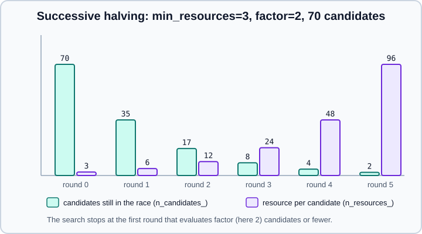

Grid, Randomized & Halving Search in scikit-learn
|
This content was generated with the assistance of AI and should be verified against the official documentation before being relied on in production. |
Hyper-parameters are the settings an estimator does not learn by itself and that you pass to its constructor: C, kernel
and gamma of a support vector machine, alpha of a lasso, max_depth of a tree, n_estimators of a forest. They have a
large effect on quality, and the recommended way to choose them is to search the space of values and keep the combination
with the best cross-validated score. This page covers the four search classes in sklearn.model_selection, how to describe
a search space (including inside pipelines), how to read the results, how to score with several metrics, how successive
halving saves time, the estimators with a built-in, cheaper search, and the mistakes that make a tuned score
misleading.
It targets scikit-learn 1.9 (1.9.1 at the time of writing) with NumPy 2.5 and pandas 3.1, and was checked in October 2026. Examples target Python 3.13 or 3.14 and were run on Python 3.13. Every example was run with Python 3.13, scikit-learn 1.9.1 and NumPy 2.5.4; the printed output is the real output, and timings and random draws will differ on another machine. The folds that the search uses are those of Cross-Validation & Splitters; the scores come from Metrics & Scoring; the estimators being tuned are described in Choosing the Right Estimator.
What a search consists of
A search has five ingredients: an estimator (a classifier, a regressor or a whole pipeline), a parameter space, a method
for searching or sampling candidates, a cross-validation scheme and a score function. The two generic strategies are
GridSearchCV, which exhaustively evaluates every combination of listed values, and RandomizedSearchCV, which samples a
fixed number of candidates from lists or probability distributions. Both have successive-halving counterparts,
HalvingGridSearchCV and HalvingRandomSearchCV, which can be much faster. All four are estimators: fit runs the
search, and with the default refit=True the best candidate is refitted on the whole training data, so the search object
can be used directly to predict.
| Class | Candidates | Reach for it when |
|---|---|---|
|
All combinations of the lists in |
Few parameters with few values each, or a final fine search around a known good region. |
|
|
Many parameters, continuous parameters, or a fixed time budget. Adding irrelevant parameters does not make it less efficient. |
|
All combinations, evaluated with growing resources |
Many candidates and an expensive model; early rounds use little data. |
|
Random draws, evaluated with growing resources |
The same, with a large or continuous space. |
To find the names and current values of every parameter of an estimator, call estimator.get_params(); a small subset of
parameters usually decides most of the quality, and the docstring of the estimator tells you which. The sections on
pipelines below show how names are formed for composite estimators.
GridSearchCV
param_grid is a dictionary mapping parameter names to the list of values to try, or a list of such dictionaries when some
parameters only make sense together (a gamma only matters for the RBF kernel, for example). The candidates are the Cartesian
product inside every dictionary, and the dictionaries are explored one after the other.
import pandas as pd
from sklearn.datasets import load_breast_cancer
from sklearn.model_selection import GridSearchCV, train_test_split
from sklearn.pipeline import Pipeline
from sklearn.preprocessing import StandardScaler
from sklearn.svm import SVC
X, y = load_breast_cancer(return_X_y=True)
X_dev, X_test, y_dev, y_test = train_test_split(X, y, test_size=0.25, stratify=y, random_state=0)
pipe = Pipeline([("scale", StandardScaler()), ("svc", SVC())])
param_grid = [
{"svc__kernel": ["linear"], "svc__C": [0.1, 1, 10]},
{"svc__kernel": ["rbf"], "svc__C": [0.1, 1, 10], "svc__gamma": [0.001, 0.01, 0.1]},
]
search = GridSearchCV(pipe, param_grid, cv=5, scoring="accuracy", n_jobs=1)
search.fit(X_dev, y_dev)
print("candidates:", len(search.cv_results_["params"]), " fits:", len(search.cv_results_["params"]) * 5)
print("best params:", search.best_params_)
print("best CV score:", round(search.best_score_, 4), " best index:", search.best_index_)
print("test score of refitted best_estimator_:", round(search.score(X_test, y_test), 4))
cols = ["param_svc__kernel", "param_svc__C", "param_svc__gamma", "mean_test_score", "std_test_score", "rank_test_score"]
res = pd.DataFrame(search.cv_results_)[cols].sort_values("rank_test_score")
print(res.head(6).round(4).to_string(index=False))candidates: 12 fits: 60
best params: {'svc__C': 0.1, 'svc__kernel': 'linear'}
best CV score: 0.9883 best index: 0
test score of refitted best_estimator_: 0.958
param_svc__kernel param_svc__C param_svc__gamma mean_test_score std_test_score rank_test_score
linear 0.1 NaN 0.9883 0.0129 1
rbf 10.0 0.010 0.9812 0.0057 2
linear 1.0 NaN 0.9789 0.0136 3
rbf 10.0 0.001 0.9742 0.0136 4
rbf 1.0 0.100 0.9695 0.0158 5
rbf 1.0 0.010 0.9672 0.0185 6The data is first split into a development set (searched) and a test set (touched once, at the end), as the user guide
recommends. The two sub-grids give 3 + 9 = 12 candidates and, with 5 folds, 60 fits plus one refit on the whole
development set. Note the NaN in param_svc__gamma for the linear rows: parameters that a candidate does not set are
reported as missing, and in a list-of-dictionaries grid the columns of all dictionaries are merged. The best cross-validated
accuracy (0.9883) is higher than the test accuracy (0.958); that is the optimism of a score used for selection, and the
reason the test set exists.
What the fitted search object gives you
| Attribute | Meaning |
|---|---|
|
The estimator refitted with the best parameters on the whole data (only if |
|
The parameter dictionary of the best candidate. |
|
The mean cross-validated score of the best candidate. Not available when |
|
The row of |
|
A dictionary of arrays, one entry per candidate (see below); convert it with |
|
The scoring used on the held-out data to choose the best parameters. |
|
The number of cross-validation splits. |
|
Seconds spent refitting on the whole data. |
|
Whether several metrics were evaluated. |
Source: API reference, GridSearchCV
cv_results_ has params (the dictionaries), one param_<name> column per searched parameter, mean_fit_time and
mean_score_time with their standard deviations, split0_test_score, split1_test_score and so on, mean_test_score,
std_test_score and rank_test_score. With return_train_score=True the matching train columns are added, which doubles
the scoring work but reveals overfitting per candidate; it is off by default. Do not read too much into small differences
in mean_test_score: compare them with std_test_score before preferring one candidate over another.
RandomizedSearchCV
Instead of a grid, each parameter is given either a list (sampled uniformly) or any object with an rvs method, which in
practice means a distribution from scipy.stats: randint, uniform, loguniform, expon, gamma. The budget is
n_iter, independent of how many parameters there are. This has two advantages over a grid: the cost is chosen directly,
and adding a parameter that does not matter does not waste evaluations, since every candidate still samples new values of
the important ones. For a continuous parameter, give a continuous distribution; increasing n_iter then always refines
the search. A log-uniform distribution is the continuous version of a log-spaced list such as [1, 10, 100].
import pandas as pd
from scipy.stats import loguniform, randint
from sklearn.datasets import load_breast_cancer
from sklearn.ensemble import RandomForestClassifier
from sklearn.model_selection import RandomizedSearchCV
X, y = load_breast_cancer(return_X_y=True)
dist = {
"n_estimators": randint(50, 300),
"max_depth": [3, 5, 8, None],
"min_samples_leaf": randint(1, 20),
"max_features": loguniform(0.05, 1.0), # a float: fraction of features
"class_weight": ["balanced", None],
}
search = RandomizedSearchCV(RandomForestClassifier(random_state=0), dist, n_iter=15,
cv=5, scoring="roc_auc", random_state=42, n_jobs=1)
search.fit(X, y)
print(search.best_params_)
print(round(search.best_score_, 4))
cols = ["param_n_estimators", "param_max_depth", "param_max_features", "mean_test_score", "rank_test_score"]
print(pd.DataFrame(search.cv_results_)[cols].sort_values("rank_test_score").head(4).round(4).to_string(index=False))
# the same random_state draws the same candidates
again = RandomizedSearchCV(RandomForestClassifier(random_state=0), dist, n_iter=15,
cv=5, scoring="roc_auc", random_state=42).fit(X, y)
print("same candidates:", again.cv_results_["params"] == search.cv_results_["params"]){'class_weight': None, 'max_depth': 8, 'max_features': np.float64(0.05318033256270143), 'min_samples_leaf': 2, 'n_estimators': 137}
0.9923
param_n_estimators param_max_depth param_max_features mean_test_score rank_test_score
137 8 0.0532 0.9923 1
278 None 0.2949 0.9922 2
153 8 0.6697 0.9918 3
253 5 0.0945 0.9914 4
same candidates: TruePoints to remember:
-
Two forests with very different
max_featuresandn_estimatorsare within 0.001 ROC AUC of each other here. When the top candidates are this close, pick by cost or simplicity, not by rank 1. -
random_stateseeds the sampling of candidates, as the last two lines show; the estimator has its ownrandom_state. -
If every parameter is a list and the total number of combinations is smaller than
n_iter, scikit-learn draws without replacement, runs only the existing combinations and warns ("The total space of parameters 3 is smaller thann_iter=10. Running 3 iterations. For exhaustive searches, use GridSearchCV."), which is the signal that a grid would do. -
The user guide’s example imports
loguniformfromsklearn.utils.fixes. That import no longer works in scikit-learn 1.9.1 (ImportError: cannot import name 'loguniform'); usefrom scipy.stats import loguniform. -
Distributions from
scipy.statsaccept a seed, and scikit-learn passes the search’srandom_stateto them. Old advice about seeding NumPy’s global state before a randomized search is obsolete (that was a SciPy 0.16-era limitation).
Searching inside pipelines and column transformers
Any parameter of any step of a composite estimator can be searched with the <step>__<parameter> syntax: the step name,
two underscores, the parameter name, repeated for every level of nesting. A whole step can be swapped for another, for
the string "passthrough" (to switch the step off) or for a different estimator. A list of dictionaries can also contain
different estimators in the same step, which turns the search into a model selection.
import numpy as np
import pandas as pd
from sklearn.compose import ColumnTransformer
from sklearn.ensemble import HistGradientBoostingClassifier
from sklearn.impute import SimpleImputer
from sklearn.linear_model import LogisticRegression
from sklearn.model_selection import GridSearchCV
from sklearn.pipeline import Pipeline
from sklearn.preprocessing import OneHotEncoder, StandardScaler, MinMaxScaler
rng = np.random.default_rng(0)
n = 600
df = pd.DataFrame({
"age": rng.normal(40, 12, n),
"income": rng.lognormal(10, 0.6, n),
"city": rng.choice(["Oslo", "Lima", "Kyiv", "Pune"], n),
})
df.loc[rng.choice(n, 40, replace=False), "age"] = np.nan
y = ((df["income"] > df["income"].median()) ^ (rng.random(n) < 0.15)).astype(int)
prep = ColumnTransformer([
("num", Pipeline([("impute", SimpleImputer()), ("scale", StandardScaler())]), ["age", "income"]),
("cat", OneHotEncoder(handle_unknown="ignore"), ["city"]),
])
pipe = Pipeline([("prep", prep), ("clf", LogisticRegression(max_iter=1000))])
print([k for k in pipe.get_params() if k.count("__") >= 2][:6])
grid = {
"prep__num__impute__strategy": ["mean", "median"],
"prep__num__scale": [StandardScaler(), MinMaxScaler(), "passthrough"], # swap a whole step
"clf__C": [0.1, 1, 10],
}
search = GridSearchCV(pipe, grid, cv=5, scoring="roc_auc").fit(df, y)
print(search.best_params_)
print(round(search.best_score_, 4), "of", len(search.cv_results_["params"]), "candidates")
# searching over the model family itself: a list of grids, each with its own estimator
families = [
{"clf": [LogisticRegression(max_iter=1000)], "clf__C": [0.1, 1, 10]},
{"clf": [HistGradientBoostingClassifier(random_state=0)], "clf__max_depth": [2, 4], "clf__learning_rate": [0.05, 0.2]},
]
search2 = GridSearchCV(pipe, families, cv=5, scoring="roc_auc").fit(df, y)
print(type(search2.best_estimator_["clf"]).__name__, round(search2.best_score_, 4))['prep__num__memory', 'prep__num__steps', 'prep__num__transform_input', 'prep__num__verbose', 'prep__num__impute', 'prep__num__scale']
{'clf__C': 0.1, 'prep__num__impute__strategy': 'median', 'prep__num__scale': 'passthrough'}
0.8441 of 18 candidates
HistGradientBoostingClassifier 0.8455pipe.get_params() lists the legal names; prep__num__impute__strategy reaches the strategy of the imputer that sits in
the num pipeline inside the prep column transformer. Because the whole pipeline is refitted inside every fold, the
imputer, the scaler and the encoder are always learned from training folds only; that is why the search belongs around the
pipeline, never after a separate fit_transform on all the data. The data in this example is synthetic (the label is
income above its median with 15 % flipped), so the scores themselves mean nothing; the mechanics are the point. The step
names are chosen by you (or generated by make_pipeline as the lower-case class name), see
Pipelines and
ColumnTransformer & Heterogeneous Data. For very large pipelines
a memory= cache on the pipeline avoids refitting expensive early steps for every candidate.
Scoring, several metrics and refit
By default every search scores with the estimator’s own score method (accuracy for classifiers, R² for regressors). On
imbalanced data accuracy is rarely the right goal, so set scoring= to the metric that reflects the decision ("roc_auc",
"average_precision", "f1", "neg_root_mean_squared_error", a make_scorer object). GridSearchCV and
RandomizedSearchCV can record several metrics in one run; because a single candidate must be chosen, refit then has
to name the metric that decides:
import numpy as np
import pandas as pd
from sklearn.datasets import make_classification
from sklearn.linear_model import LogisticRegression
from sklearn.model_selection import GridSearchCV
from sklearn.pipeline import make_pipeline
from sklearn.preprocessing import StandardScaler
X, y = make_classification(n_samples=600, n_features=20, n_informative=5, weights=[0.8], random_state=0)
pipe = make_pipeline(StandardScaler(), LogisticRegression(max_iter=2000))
grid = {"logisticregression__C": np.logspace(-4, 2, 7)}
# several metrics: refit must name the metric that picks best_params_
multi = GridSearchCV(pipe, grid, cv=5, scoring={"auc": "roc_auc", "ap": "average_precision", "bacc": "balanced_accuracy"},
refit="ap")
multi.fit(X, y)
print(multi.multimetric_, multi.best_params_, round(multi.best_score_, 4))
print(sorted(k for k in multi.cv_results_ if k.startswith("mean_test")))
try:
GridSearchCV(pipe, grid, cv=5, scoring=["roc_auc", "average_precision"]).fit(X, y)
except ValueError as exc:
print("ValueError:", str(exc)[:110], "...")True {'logisticregression__C': np.float64(0.01)} 0.8608
['mean_test_ap', 'mean_test_auc', 'mean_test_bacc']
ValueError: For multi-metric scoring, the parameter refit must be set to a scorer key or a callable to refit an estimator ...With several metrics cv_results_ has mean_test_<name>, rank_test_<name> and so on for every metric, and
best_params_, best_score_ and best_estimator_ refer to the metric given in refit. Leaving refit at its default
raises the error shown; refit=False skips the final fit entirely (you then read cv_results_ yourself). The two halving
searches do not support multi-metric scoring.
refit can also be a function that receives cv_results_ and returns the index of the candidate to keep. That is the
tool for rules other than "highest mean", such as the simplest model within one standard error of the best:
import numpy as np
from sklearn.datasets import make_classification
from sklearn.linear_model import LogisticRegression
from sklearn.model_selection import GridSearchCV
from sklearn.pipeline import make_pipeline
from sklearn.preprocessing import StandardScaler
X, y = make_classification(n_samples=600, n_features=20, n_informative=5, weights=[0.8], random_state=0)
pipe = make_pipeline(StandardScaler(), LogisticRegression(max_iter=2000))
grid = {"logisticregression__C": np.logspace(-4, 2, 7)}
def simplest_within_one_std(cv_results):
mean, std = cv_results["mean_test_score"], cv_results["std_test_score"]
best = np.argmax(mean)
threshold = mean[best] - std[best]
ok = np.flatnonzero(mean >= threshold)
# smaller C = stronger regularisation = simpler model
c = np.array([p["logisticregression__C"] for p in cv_results["params"]])
return int(ok[np.argmin(c[ok])])
rule = GridSearchCV(pipe, grid, cv=5, scoring="roc_auc", refit=simplest_within_one_std).fit(X, y)
print("argmax C:", GridSearchCV(pipe, grid, cv=5, scoring="roc_auc").fit(X, y).best_params_)
print("1-SE C :", rule.best_params_)
print("best_score_ with callable refit:", hasattr(rule, "best_score_"))argmax C: {'logisticregression__C': np.float64(0.1)}
1-SE C : {'logisticregression__C': np.float64(0.0001)}
best_score_ with callable refit: FalseOn this synthetic problem the AUC curve is so flat that the strongest regularisation is within one standard deviation of
the best, which is a warning that the rule needs a sensible choice of grid. With a callable refit the attributes
best_index_, best_params_ and best_estimator_ are set from the returned index, while best_score_ is not available.
Successive halving
Successive halving works like a tournament. All candidates are first evaluated with a small amount of a resource (by
default the number of training samples); only the best fraction survives to the next round, where each survivor gets
more resource, and so on until the best candidate has been trained with the full resource. The resource can instead be any
numeric parameter of the estimator, such as n_estimators of a forest.

Both classes are still experimental: their predictions and API can change without the usual deprecation cycle, and they must be enabled explicitly. Importing them without the experimental module fails:
from sklearn.experimental import enable_halving_search_cv # noqa: F401
from sklearn.model_selection import HalvingGridSearchCV, HalvingRandomSearchCVWithout the first line, from sklearn.model_selection import HalvingGridSearchCV raises ImportError ("HalvingGridSearchCV is
experimental and the API might change without any deprecation cycle"). Unlike HistGradientBoosting*, which is stable and
no longer needs enable_hist_gradient_boosting, the halving searches still need their experimental import in 1.9.
The parameters that control the tournament:
| Parameter | Meaning |
|---|---|
|
Resource per candidate is multiplied by |
|
|
|
Resource per candidate in the first round. |
|
Largest resource any candidate may use. |
|
If there is not enough resource to get down to |
|
Number of candidates in the first round; |
In round i each candidate gets factor ** i * min_resources resources, and n_candidates // factor ** i candidates
remain. The search stops at the first round that evaluates factor candidates or fewer, because one more round would only
re-evaluate the winner. If the last round still has more than factor candidates, it degenerates into a regular search.
The next example compares an ordinary grid search with a halving search on the same grid of 60 candidates:
import time
import pandas as pd
from sklearn.datasets import make_classification
from sklearn.ensemble import RandomForestClassifier
from sklearn.experimental import enable_halving_search_cv # noqa: F401
from sklearn.model_selection import GridSearchCV, HalvingGridSearchCV
X, y = make_classification(n_samples=4000, n_features=20, n_informative=8, random_state=0)
grid = {"max_depth": [3, 5, 8, 12, None], "min_samples_split": [2, 5, 10, 20], "max_features": [0.2, 0.5, 1.0]}
rf = RandomForestClassifier(n_estimators=100, random_state=0)
t = time.perf_counter(); full = GridSearchCV(rf, grid, cv=5, n_jobs=1).fit(X, y); t_full = time.perf_counter() - t
t = time.perf_counter(); sh = HalvingGridSearchCV(rf, grid, cv=5, factor=3, random_state=0, n_jobs=1).fit(X, y); t_sh = time.perf_counter() - t
print("grid candidates:", len(grid["max_depth"]) * len(grid["min_samples_split"]) * len(grid["max_features"]))
print("grid best:", full.best_params_, round(full.best_score_, 4), f"{t_full:.1f}s")
print("halving best:", sh.best_params_, round(sh.best_score_, 4), f"{t_sh:.1f}s")
print("n_iterations_:", sh.n_iterations_)
print("n_resources_ :", sh.n_resources_)
print("n_candidates_:", sh.n_candidates_)
print("max_resources_:", sh.max_resources_, " min_resources_:", sh.min_resources_)
r = pd.DataFrame(sh.cv_results_)
print(r.groupby("iter").agg(n=("params", "size"), n_resources=("n_resources", "first"), best=("mean_test_score", "max")).round(4))grid candidates: 60
grid best: {'max_depth': None, 'max_features': 0.5, 'min_samples_split': 5} 0.942 188.6s
halving best: {'max_depth': None, 'max_features': 0.2, 'min_samples_split': 2} 0.9412 28.2s
n_iterations_: 4
n_resources_ : [148, 444, 1332, 3996]
n_candidates_: [60, 20, 7, 3]
max_resources_: 4000 min_resources_: 148
n n_resources best
iter
0 60 148 0.8759
1 20 444 0.9045
2 7 1332 0.9203
3 3 3996 0.9412On this machine the full grid took about 189 seconds and the halving search about 28 seconds (single process; your times
will differ), for a best score within 0.001 and a different, equally good parameter set. The iter and n_resources
columns of cv_results_ tell you in which round and with how much data each score was measured, so only the rows of the
last iter are comparable with each other: a score measured on 148 samples is not comparable with one measured on 3996.
That is also why a very small min_resources can eliminate good candidates early: the first rounds must be able to tell good
from bad with little data. The resource increase has to be large enough that scores improve visibly between rounds.
Choosing resources and eliminating aggressively
The following runs reproduce the behaviour described in the user guide on a binary classification problem with 1000 samples,
and show a different resource (n_estimators) and the random variant:
from scipy.stats import randint
from sklearn.datasets import make_classification
from sklearn.ensemble import RandomForestClassifier
from sklearn.experimental import enable_halving_search_cv # noqa: F401
from sklearn.model_selection import HalvingGridSearchCV, HalvingRandomSearchCV
from sklearn.svm import SVC
X, y = make_classification(n_samples=1000, random_state=0)
grid = {"kernel": ["linear", "rbf"], "C": [1, 10, 100]}
svc = SVC(gamma="scale")
for kw in [dict(min_resources=20), dict(min_resources="exhaust"), dict(max_resources=40, aggressive_elimination=False),
dict(max_resources=40, aggressive_elimination=True)]:
sh = HalvingGridSearchCV(svc, grid, cv=5, factor=2, random_state=0, **kw).fit(X, y)
print(kw, sh.n_resources_, sh.n_candidates_)
# resource other than the number of samples
sh = HalvingGridSearchCV(RandomForestClassifier(random_state=0),
{"max_depth": [3, 5, 10], "min_samples_split": [2, 5, 10]},
cv=5, factor=2, resource="n_estimators", max_resources=30, random_state=0).fit(X, y)
print(sh.best_estimator_, sh.n_resources_)
hr = HalvingRandomSearchCV(RandomForestClassifier(random_state=0),
{"max_depth": [3, 5, None], "min_samples_split": randint(2, 20)},
factor=3, random_state=0, cv=5).fit(X, y)
print(hr.n_candidates_, hr.n_resources_, hr.best_params_){'min_resources': 20} [20, 40, 80] [6, 3, 2]
{'min_resources': 'exhaust'} [250, 500, 1000] [6, 3, 2]
{'max_resources': 40, 'aggressive_elimination': False} [20, 40] [6, 3]
{'max_resources': 40, 'aggressive_elimination': True} [20, 20, 40] [6, 3, 2]
RandomForestClassifier(max_depth=5, n_estimators=24, random_state=0) [3, 6, 12, 24]
[50, 17, 6, 2] [20, 60, 180, 540] {'max_depth': 3, 'min_samples_split': 2}Reading the output:
-
With
min_resources=20andfactor=2the search ends after three rounds using at most 80 of the 1000 samples: resources are wasted."exhaust"picks 250, so the final round uses all 1000. -
With only 40 resources allowed (
max_resources=40), the search must stop at the second round with three candidates, more thanfactor.aggressive_elimination=Truereplays the first round ([20, 20, 40]) to get down to two candidates. -
When the resource is
n_estimators, the rounds use 3, 6, 12 and 24 trees (the largest value that is a multiple of bothmin_resourcesandfactorbelowmax_resources, here 30), and the winner is refitted with that final resource: the best estimator hasn_estimators=24, not 30. Setmax_resourcesto a value that fits the progression if you want the full amount. -
HalvingRandomSearchCVsizes the number of candidates (50 here) so that the last round uses as much resource as it can (540 samples out of 1000 withfactor=3).
Tips for any search
-
Always keep a final test set, or nest the search. The best score of a search is biased high because it was used to choose. Split the data first with
train_test_splitand search only the development part, or run the whole search inside an outer cross-validation (see the nested example in Cross-Validation & Splitters). -
Search the pipeline, not the transformed data. Put scaling, imputation, encoding and feature selection in the pipeline being searched, so they are refitted inside each fold and cannot leak.
-
Parallelism. Every candidate on every fold is independent;
n_jobs=-1uses all cores. With models that are themselves multi-threaded (forests withn_jobs, gradient boosting, BLAS-heavy linear algebra) avoid oversubscribing the CPU: parallelise either the search or the model. See Performance & Parallelism. -
Failures. A candidate that cannot be fitted (for example a parameter outside the valid range) gets the score
nanby default and aFitFailedWarning;error_score="raise"stops at the first failure and is the better setting while you are developing, anderror_score=0assigns a number instead. -
Sample weights and groups reach the folds and the estimator through
groups=and metadata routing, as described in Metadata Routing. The search classes support routing since 1.4. -
Start coarse, then refine. A randomized search over wide, log-scaled ranges followed by a small grid around the best region is often cheaper than a large grid. Choose log-scaled distributions for parameters that act multiplicatively (
C,gamma,alpha, learning rates). -
Do not tune everything. Most estimators have two or three influential parameters; tuning all of them mostly buys noise.
-
Reproducibility. Fix the
random_stateof the search, of the splitter if it shuffles, and of the estimator.
The effect of error_score and the post-fit attributes, with a deliberately invalid candidate (C=-1):
import warnings
from sklearn.datasets import load_iris
from sklearn.model_selection import GridSearchCV
from sklearn.svm import SVC
X, y = load_iris(return_X_y=True)
grid = {"C": [1, -1]}
with warnings.catch_warnings(record=True) as w:
warnings.simplefilter("always")
g = GridSearchCV(SVC(), grid, cv=3).fit(X, y)
print(g.cv_results_["mean_test_score"], [x.category.__name__ for x in w][:2])
try:
GridSearchCV(SVC(), grid, cv=3, error_score="raise").fit(X, y)
except Exception as exc:
print(type(exc).__name__, str(exc)[:100])
g = GridSearchCV(SVC(), {"C": [1, 10]}, cv=3, error_score=0).fit(X, y)
print(g.n_splits_, g.refit_time_ > 0, g.scorer_)
print(sorted(k for k in g.cv_results_ if not k.startswith("split")))[0.96 nan] ['FitFailedWarning', 'UserWarning']
InvalidParameterError The 'C' parameter of SVC must be a float in the range (0.0, inf]. Got -1 instead.
3 True SVC.score
['mean_fit_time', 'mean_score_time', 'mean_test_score', 'param_C', 'params', 'rank_test_score', 'std_fit_time', 'std_score_time', 'std_test_score']Alternatives to brute-force search
Some estimators can fit a whole range of values of one parameter almost as cheaply as one value, notably the strength of the
regularisation along its path. Their variants whose names end in CV choose that parameter by internal cross-validation far faster than a
grid search: ElasticNetCV, LassoCV, LassoLarsCV, LarsCV, LogisticRegressionCV, MultiTaskElasticNetCV,
MultiTaskLassoCV, OrthogonalMatchingPursuitCV, RidgeCV and RidgeClassifierCV. LassoLarsIC picks the
regularisation with an information criterion (AIC or BIC) from a single path. Ensembles based on bagging (random forests,
extra trees, and the gradient boosting classes with subsampling) can estimate generalisation error from the samples left
out of each bootstrap, the out-of-bag estimate, without a separate validation set.
import numpy as np
from sklearn.datasets import load_breast_cancer, load_diabetes
from sklearn.ensemble import RandomForestClassifier
from sklearn.linear_model import LassoCV, LogisticRegressionCV, RidgeCV
from sklearn.pipeline import make_pipeline
from sklearn.preprocessing import StandardScaler
X, y = load_diabetes(return_X_y=True)
lasso = make_pipeline(StandardScaler(), LassoCV(cv=5, random_state=0)).fit(X, y)
print("LassoCV alpha:", round(lasso[-1].alpha_, 4), " alphas tried:", len(lasso[-1].alphas_))
ridge = RidgeCV(alphas=np.logspace(-3, 3, 13), cv=5).fit(StandardScaler().fit_transform(X), y)
print("RidgeCV alpha:", ridge.alpha_)
Xc, yc = load_breast_cancer(return_X_y=True)
logit = make_pipeline(
StandardScaler(),
LogisticRegressionCV(Cs=10, cv=5, scoring="accuracy", l1_ratios=(0,), use_legacy_attributes=False, max_iter=2000),
).fit(Xc, yc)
print("LogisticRegressionCV C:", round(float(logit[-1].C_), 4))
rf = RandomForestClassifier(n_estimators=300, oob_score=True, random_state=0).fit(Xc, yc)
print("out-of-bag accuracy:", round(rf.oob_score_, 4))LassoCV alpha: 0.0789 alphas tried: 100
RidgeCV alpha: 0.1
LogisticRegressionCV C: 0.3594
out-of-bag accuracy: 0.9649The RidgeCV line scales the data outside the folds for brevity; in real work wrap the scaler and the estimator in a
pipeline as LassoCV is above. In scikit-learn 1.9.1, LogisticRegressionCV warns about three coming changes unless they
are set explicitly: the default l1_ratios=None will become (0.0,) in 1.10, the default scoring will change from accuracy
to "neg_log_loss" in 1.11, and the fitted attributes will be simplified in 1.10 (use_legacy_attributes=False selects the
new behaviour now, where C_ is a single float). The example sets all three, so it runs without warnings and will keep the
same meaning after those releases.
Where older books and tutorials are outdated
-
from sklearn.grid_search import GridSearchCVandfrom sklearn.cross_validation import cross_val_scorestopped working long ago: the modules were deprecated in scikit-learn 0.18 (2016) and moved tosklearn.model_selection, and today they raiseModuleNotFoundError. -
GridSearchCV.grid_scores_was replaced bycv_results_in 0.18 and the attribute no longer exists; code that readsgrid_scores_or passesiid=to a search fails withAttributeErrororTypeError. -
base_estimator=was renamedestimator=in the meta-estimators (removed in 1.4); older code that searches overbase_estimator__max_depthof a bagging or boosting meta-estimator must useestimator__max_depth. -
Default values changed in 0.22: forests use
n_estimators=100instead of 10, and the defaultcvis 5 instead of 3; results from books written earlier are not comparable with today’s defaults. -
from sklearn.utils.fixes import loguniform, shown in the current user guide, fails in 1.9.1; import it fromscipy.stats. -
Books that implement a grid search with nested
forloops andtrain_test_spliton the same test set reuse the test data for selection; keep the loop inside cross-validation on the development set instead. -
Older material does not mention the halving searches. They need
enable_halving_search_cvand are still experimental.
References
-
scikit-learn user guide: Tuning the hyper-parameters of an estimator
-
Example: Comparison between grid search and successive halving
-
James Bergstra and Yoshua Bengio, Random search for hyper-parameter optimization, Journal of Machine Learning Research, 2012 (cited by the user guide)
-
Kevin Jamieson and Ameet Talwalkar, Non-stochastic best arm identification and hyper-parameter optimization, 2016, and Lisha Li et al., Hyperband, Journal of Machine Learning Research, 2018 (cited by the user guide for successive halving)